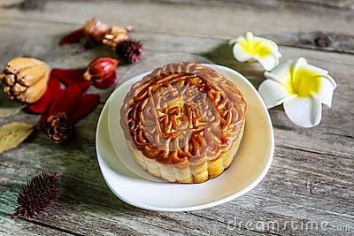
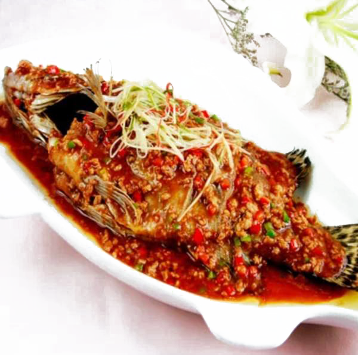
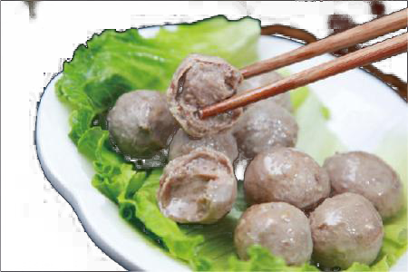

盘点中国出产的顶级美味食材
对于吃货们来说，美食是永恒的追求。白松露、阿尔马斯鱼子酱、金枪鱼等等固然是世界顶级的食材，但是对于部分像小编一样有一颗中国胃的吃货来说，恐怕就不是那么对胃口了。其实，咱们泱泱大中华，从来不缺美食，缺少的是发现美食的眼睛。只要你用心观察，你会发现中国有些美味食材，丝毫不亚于这些在世界上享有盛誉的美食。
阳澄湖大闸蟹
毫无疑问，每年金风送爽、菊花盛开之时，全国人民都要掀起一场吃大闸蟹的热潮。俗语说：“秋风起，蟹脚痒，九月圆脐十月尖。”九月要食雌蟹，这时雌蟹黄满肉厚；十月要吃雄蟹，这时雄蟹蟹脐呈尖形，膏足肉坚。
长江魤（é）鱼
每当提起长江中著名的食用鱼，人们总会想起鲥鱼、刀鱼。。。然而鲜少有人知道，历史上还曾有一种鱼的美味被众多挑剔食客千里追寻，它就是被当地人称为“华达子”的魤鱼。
安徽臭鳜鱼 安徽臭鳜鱼可谓是大名鼎鼎，又名臭桂鱼、桶鲜鱼、桶鱼，腌鲜鱼，是著名的徽州菜代表之一。做徽菜的餐厅里如果少了这道菜，那基本上可以认为是不太正宗了。
潮汕手打牛肉丸 潮汕美食精工细琢，讲究“清而不淡，鲜而不腻”，有着深厚的底蕴和独特的魅力。潮汕牛肉丸就是其中最具代表性的一种美食。选用新鲜的牛腿包肉作料，去筋后切成块，用力将肉槌成肉酱，加入调料拌匀，再用手使劲搅挞，直至肉浆粘手不掉。此时用手抓起肉浆，握紧拳头，从拇指和食指间挤出一丸肉，用羹匙掏进温水盆里，烫熟后即成爽脆的牛肉丸。
刀板香
喜爱徽菜的人应该都知道“刀板香”。用腌咸肉制作的“刀板香”是徽州人待客的一道主菜，可以说，没吃过刀板香，就相当于没吃过正宗的徽菜。
查看更多 >
Copyright © 2017 | 陕ICP备05001616号 | 陕西省，西安市碑林区，西安理工大学金花校区 王小改